F134.12: flows and component diagrams in the others' look
Three real pictures, as the renderer draws them today, with only the look changed. Nothing the layout placed is moved, except that the room above the drawing shrinks to what the small title needs.
A flow with groups and every shape: the new look
A decision, option 1: a card with a diamond badge
A decision is a glass card like any box, as wide as its words, and its badge is a diamond with a question mark in the box's tone.
A decision, option 2: a box with pointed ends
Still a shape of its own, outlined in its tone, and no wider than its words.
A decision, option 3: the diamond as first drawn (the picture at the top)
The same flow, as it is today
louis-agent.diagrams: how a picture is made, in your system's colour scheme
The same, in the other colour scheme
The component diagram: the new look
The component diagram, as it is today

The component diagram, in the other colour scheme